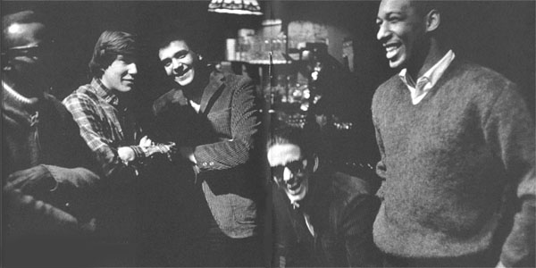

- ATB's Who's Who -
- ATB's Who's Who -
Баттерфилд родился в Чикаго и еще в детстве открыл для себя блюз. Вместе с другим чикагским белым подростком Майком Блумфилдом (Mike BLOOMFIELD) он проникал к блюзовые клубы (где по закону им не полагалось быть без сопровождения взрослых) и слушал корифеев чикагского блюза. В отличие от Джона Мэйэлла (John MAYALL) и других зачинателей британской блюзовой волны, Баттерфилд мог не только изучать блюз по пластинкам, но и брать очные уроки у блюзовых мастеров. К 16 годам он настолько преуспел в игре на губной гармонике, что мог участвовать в джемах с молодыми виртуозами нового тогда направления Уэст-Энд-блюза (West End): Мэджиком Сэмом (Magic Sam) и Отисом Рашем (Otis Rush). Поступил в Чикагский университет, где познакомился с Элвином Бишопом (Elvin Bishop), с которым в 1963г. собрал группу Paul Butterfield's Blues Band. Группа была экстраординарным феноменом для своего времени во многих отношениях. Блюзбэнд Пола Баттерфилда исполнял блюз в рок-аранжировках. Возможно, это был первый блюзбэнд со смешанным в расовом отношении составом. В нем играли молодые белые студенты (немузыкальных вузов): Майк Блумфилд, гитара, Элвин Бишоп, гитара, Марк Нафталин (Mark Naftalin), клавишные - и ритм-секция из ветеранов чикагского блюза: бассиста Джерома Арнольда (Jerome Arnold, брат Билли Боя Арнольда (Billy Boy Arnold) и барабанщика Сэма Лея (Sam Lay) (бывшего участника блюзбэнда Хаулин Вулфа (Howlin' Wolf)). В 1964г. группа приняла участие в фестивале фолк-музыки в Ньюпорте, и их рок-напор вызвал настоящий скандал и возмущение в среде ревнителей чистоты фолкового звучания. Через год на этом же фестивале они аккомпанировали первому "электрическому" выступлению Боба Дилана, так же вызвавшему полярные отклики. Подписали контракт с фирмой "Электра", лидировавшей в области рок-музыки, и в 1965г. выпустили дебютный диск, представлявший блюзроковые обработки известных блюзовых стандартов, принадлежавших лидерам чикагского блюза: Мадди Уотерсу (Muddy Waters), Уилли Диксону (Willie Dixon), Элмору Джеймсу (Elmore James), Литл Уолтеру (Little Walter). Последний был для Баттерфилда образцом для подражания в мастерстве игры на губной гармонике, и одна из оригинальных композиций в альбоме: "Thank You Mr.Poobah" представляла собой "ответ" на известнейший хит Литл Уолтера "Juke". В качестве автора песни на обложке альбома впервые появляется имя Ника Гравенитез (Nick Gravenites), ставшего вскоре одним из популярнейших песенников калифорнийского рока. Современники особо выделяли игру Блумфилда, предложившего новый стиль игры слайдом на электрогитаре. Альбом вызвал настоящую сенсацию, и ныне считается первой работой в области белого блюз-рока. Если первый альбом представлял в новой рок-стилистике чикагский блюз, следующий включал в себя развернутые гитарные импровизации Блумфилда и Бишопа и в большой степени приближалась к джаз-року, а так же демонстрировал модные для того времени эксперименты с индийской традиционной музыкой. Ритм-секция группы часто менялась. Блумфилд покинул группу после второго альбома для того, чтобы создать свою первую группу "Электрик Флэг" (Electric Flag), так же пытавшуюся скрестить блюз с роком. На следующем альбоме Баттерфилд использовал секцию медных, в которой участвовал известный в будущем джазовый саксофонист Дэвид Сэнборн (David Sanborn). Увлекшись экспериментами, Пол Баттерфилд значительно отошел от блюзовой основы, на которой были выстроены его первые успешные работы. В 1969г. "Зе Пол Баттерфилдз Блюз Бэнд" принял участие в фестивале в Вудстоке. В духе хиппового "лета любви" одна из специально написанных для фестиваля песен называлась "Марш Любви". В том же году Баттерфилд участвовал в записи альбома Мадди Уотерса "Fathers & Sons"("Отцы и дети"), в котором рок-музыканты отдавали дань уважения своим блюзовым учителям. Радиоконцерт с участием Баттерфилда и Уолтера Хортона (Walter Horton), признанного мастера губной гармоники, участника блюзбэнда Мадди Уотерса, опубликован на CD европейской фирмой Red Lightnin' под названием "An Offer You Can't Refuse" ("Предложение, от которого вы не сможете отказаться"). К 1972г., когда Баттерфилд распустил группу, в ее составе не оставалось уже никого из участников-основателей. Элвин Бишоп довольно удачно занялся сольной карьерой, выпустив дебютный сольный альбом в 1969г.. В 70-х сотрудничал с "Си-Би-Эс/Эпик"(CBS/Epic) и добился хитпарадного успеха. В конце 80-х подписал контракт с фирмой "Эллигейтор"("Alligator") и продолжал успешно выступать на блюзовой сцене и записываться в 90-х. Пол Баттерфилд в 1972г. создает новый проект "Paul Butterfield's Better Days" в составе: Билли Рич (Bille Rich), бас; Крис Паркер (Chris Parker), ударные; Ронни Бэрон (Ronnie Barron), клавишные; Эмос Гэрретт (Amos Garrett), гитара; Джефф Малдар (Geoff Muldar), второй вокалист. Баттерфилд значительно прогрессировал как вокалист, и альбомы новой группы звучали ближе к соул, где Баттерфилд мог наиболее выигрышно раскрыть именно этот талант. Гармоника, бывшая главным инструментом его предыдущих альбомов, звучит на них лишь как один из аккомпанирующих инструментов. Альбомы были приняты неплохо. Провалом оказался альбом 1976 года. В 1976г. Баттерфилд принимал участие в прощальном концерте группы "Зе Бэнд"(The Band). Гастролировал с бывшими участниками "Зе Бэнд": Левоном Хэлмом (Levon Helm) в ансамбле "Ар-Си-Оу Олл Старз"(RCO All Stars), а затем с Риком Данко (Rick Danko) как "Данко-Баттерфилд Бэнд". Альбомы Баттерфилда конца 70-х, первой половины 80-х не были удачными ни в коммерческом, ни в творческом отношении, хотя всегда включали в себя и отдельные достойные фрагменты. У Баттерфилда начались серьезные проблемы со здоровье, значительно усугублявшиеся его зависимостью от наркотиков и алкоголя, унаследованной от эпохи "любви, мира и цветов". В отдельные моменты, когда он преодолевал эту зависимость, он представал вновь во всей силе своего таланта, как это демонстрирует видеозапись концерта 1987г. "BBKing & Friends". Здесь Баттерфилд играет значительно энергичней, эмоциональной и в целом гораздо ближе к блюзовой эстетике, чем даже на самых удачных и популярных первых записях. Возможно, он стоял на пороге нового творческого взлета, но в мае того года его жизнь оборвал сердечный приступ, спровоцированный употреблением наркотика. ВЭБ™'99
Дискография:
В сети: |